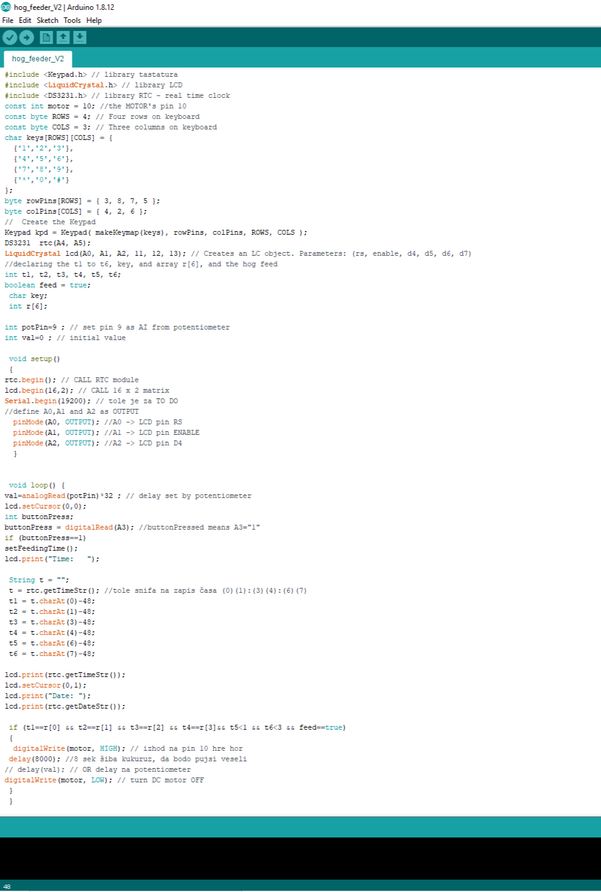
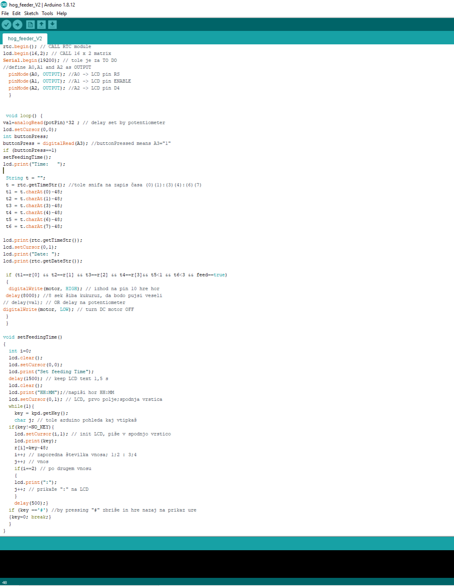

|  |
Najprej sem sprogramiral številčno tipkovnico gledena vrsticede gledena priključke. Potem sem gledena točke na ekranu, ki so razdeljene na vrste 1 in 2 po osem znakov. Potem sem nastavil zakasnitev na zaslonu da nebi prišlo do kakšnih napak. Potem sem nastavil možnost da lahko vnesem čas za timer in dodal čas poteka ko pride timer čas dokonca ,ki je 8000stotink, kar je 8sekund. |
|  | Nakoncu sem dodal da vsakič ko se čas osmih sekund izteče, se led ekran resetira in se spet prižge ura z že uštetimi osmimi sekundami. Primer uporabe: pritisenš zgornji gumb, vtipkaš željeni čas in pritisneš lojtro za potrditev. |